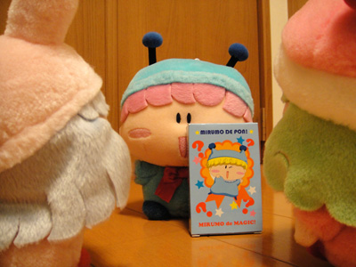
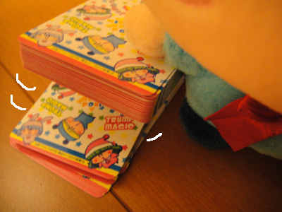
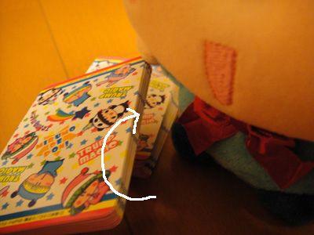
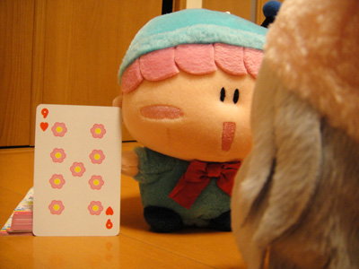
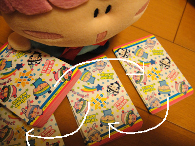
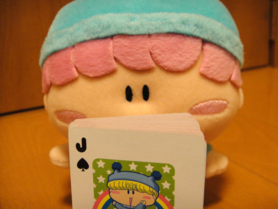
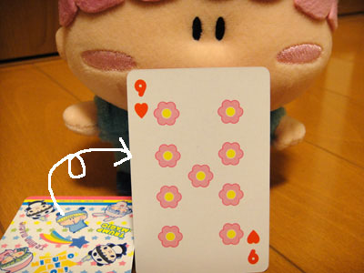
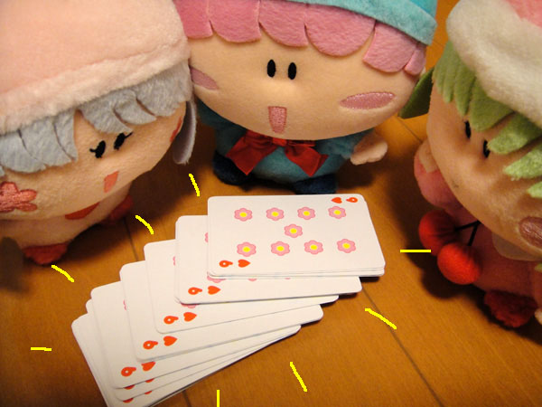
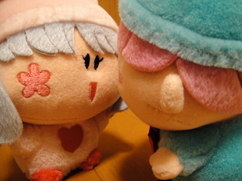

先日部屋を掃除している最中に、『ミルモでマジック』という懐かしいグッズを発見！ こういったミルモグッズがトイザらスで普通に売られていた頃が本当に懐かしいですね。グッズとの久々の再会を祝して、今回は数年前に「記事」で紹介したものとは別のマジックを紹介したいと思います。
（以前の紹介記事はこちら）
今回選んだのは、ミルモでマジックの中でも最高級の難易度を誇る（と私は思う）『トランプマジック』です。なんと今回は店長ムルモさん直々にマジックを披露していただきました。

ムルモ「今日は皆しゃんにボクのしゅごいマジックを見せましゅよ」 |

ムルモ「ボクがカードをめくりましゅから、パピィは好きなところで |
パピィ「ちゅとっぷ！」 |

ムルモ「下にたまったカードを一番上に持っていきましゅよ」 |

ムルモ「パピィはこの一番上にあるカードを覚えておいてくだしゃいね」 |

先ほどのハートの９を一番上に戻し、シャッフルします。 |

ムルモ「ぜぇぜぇ・・・これで満足でしゅか？ |

ムルモ「はいでしゅっ！」 |

ムルモ「なんと全部同じカードになってるでしゅ～」 |

念のため・・・。ムルモは説明し忘れていますが、カードの束には他にもいろんな柄のカードが入っています。 |

パピィ「む～～っ、ムルモのくせに・・・。 |
上の説明でどんなマジックなのか伝わりましたでしょうか？ ムルモの言うように、このマジックは１回しか見せられません(^◇^;)。その理由やマジックのタネを知りたい人は、ぜひ『ミルモでマジック』をゲットして確認しましょう。
それにしても今回はぬいぐるみの撮影が大変でした。床に這いながらぬいぐるみとカードを撮影するのがかなりきつい・・というかかなり怪しい行動をしていますね(^^;。
(2009/12/11)